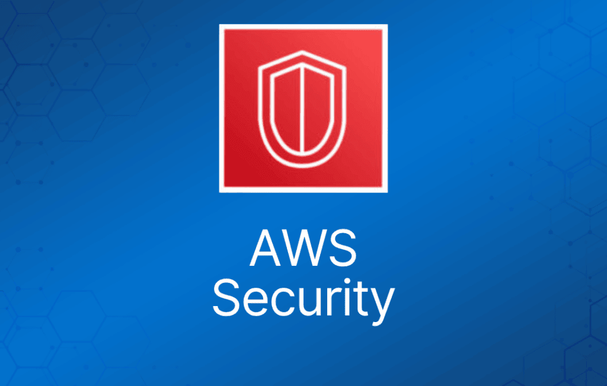
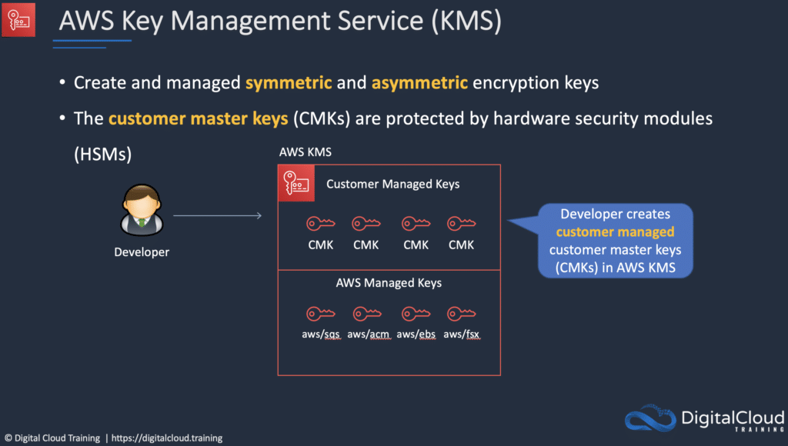
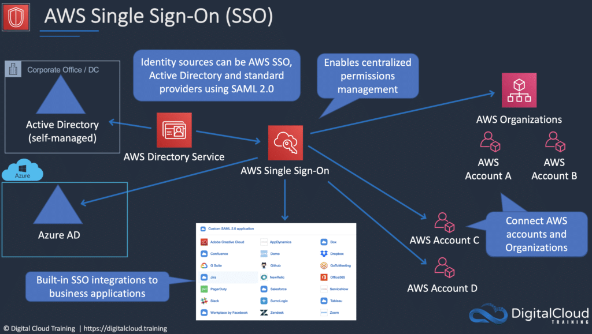
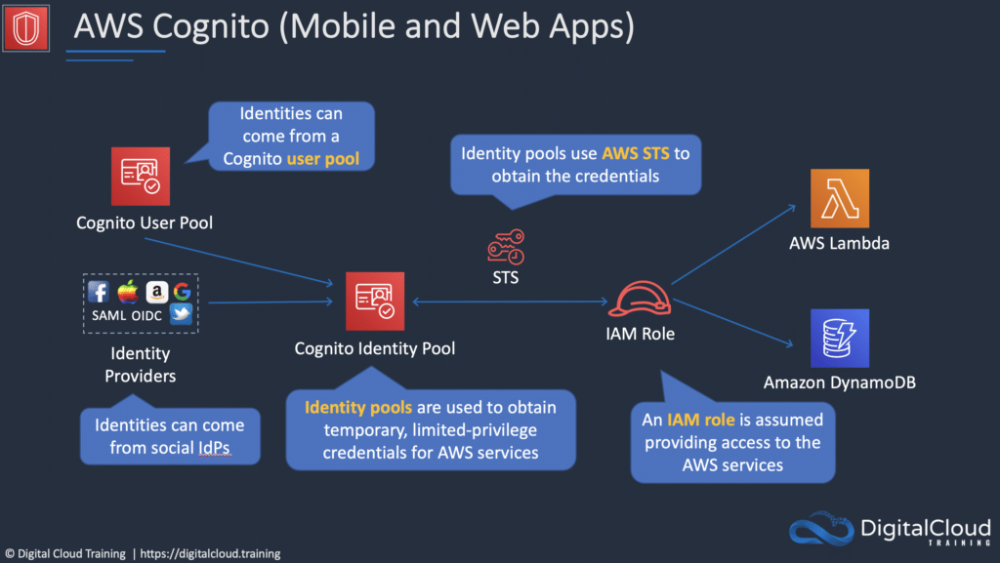

作为 AWS 客户，你天然继承了 AWS 在策略、架构和运维流程方面的所有最佳实践。
AWS 云采用责任共担模型（shared responsibility model）。
AWS 负责云本身的安全（security OF the cloud）；你负责云内部的安全（security IN the cloud）。
你对自己选择实施的安全措施保有完全的控制权，用于保护你自己的内容、平台、应用、系统和网络——与在本地数据中心的做法没有区别。
AWS 安全的优势
- 保障数据安全 – AWS 基础设施部署了强有力的防护措施。
- 保护你的隐私 – 所有数据都存储在高度安全的 AWS 数据中心。
- 满足合规要求 – AWS 在其基础设施中管理着数十项合规计划，这意味着你的部分合规工作已经完成。
- 节省成本 – 使用 AWS 数据中心降低成本，无需自建机房也能保持最高标准的安全。
- 快速扩展 – 安全性随你的 AWS 云用量一起扩展。无论企业规模大小，AWS 基础设施的设计都能保障你的数据安全。
合规（Compliance）
AWS 云合规让你了解 AWS 为维护云安全和数据保护所部署的健全控制措施。
由于系统构建在 AWS 云基础设施之上，合规责任将由双方共担。
合规计划包括：
- 认证 / 鉴证（Certifications / attestations）。
- 法律、法规与隐私。
- 对齐 / 框架（Alignments / frameworks）。
AWS Artifact
AWS Artifact 是你获取合规相关信息的首选中央资源。
它提供对 AWS 安全与合规报告以及部分在线协议的按需访问。
AWS Artifact 中可用的报告包括 Service Organization Control (SOC) 报告、Payment Card Industry (PCI) 报告，以及来自各地域、各合规领域认证机构颁发的认证，用于验证 AWS 安全控制的实施和运行有效性。
AWS Artifact 中可用的协议包括 Business Associate Addendum (BAA) 和保密协议（NDA）。
Amazon GuardDuty
Amazon GuardDuty 提供威胁检测和持续安全监控，针对恶意或未授权行为，帮助你保护 AWS 账户和工作负载。
智能化的威胁检测服务。
可检测账户入侵、实例入侵、恶意侦察和存储桶（bucket）入侵。
持续监控以下来源的事件：
- AWS CloudTrail 管理事件（Management Events）。
- AWS CloudTrail S3 数据事件（Data Events）。
- Amazon VPC Flow Logs。
- DNS 日志。
AWS WAF 与 AWS Shield
WAF：
- AWS WAF 是一种 Web 应用防火墙（web application firewall）。
- 防范可能危及应用可用性、破坏安全性或消耗过多资源的常见攻击手段。
- WAF 允许你创建规则，根据 IP 地址、HTTP header 和 body 或自定义 URI 等条件过滤 Web 流量。
- WAF 可以轻松创建规则来阻止常见的 Web 攻击，例如 SQL 注入（SQL injection）和跨站脚本（cross site scripting）。
- 这些规则称为 Web ACL。
Shield：
- AWS Shield 是托管的分布式拒绝服务（DDoS）防护服务。
- 通过持续在线检测和自动内联缓解措施，保护运行在 AWS 上的 Web 应用。
- 帮助最大限度地减少应用停机时间和延迟。
- 两个层级——Standard 和 Advanced。
AWS Key Management Service (AWS KMS)
AWS Key Management Service 让你集中控制用于保护数据的加密密钥。
你可以创建、导入、轮换、禁用、删除加密密钥，定义使用策略，并审计这些用于加密数据的密钥的使用情况。
AWS Key Management Service 与大多数其他 AWS 服务集成，让你可以轻松使用自己控制的加密密钥来加密存储在这些服务中的数据。
AWS KMS 与 AWS CloudTrail 集成，让你能够审计谁在什么时间、对哪个资源使用了哪个密钥。
AWS KMS 让开发者可以轻松加密数据——既可以在 AWS Management Console 中一键加密，也可以使用 AWS SDK 在应用代码中轻松添加加密。

AWS CloudHSM
AWS CloudHSM 是基于云的硬件安全模块（HSM），让你能够在 AWS 云上轻松生成和使用自己的加密密钥。
借助 CloudHSM，你可以使用经过 FIPS 140-2 Level 3 验证的 HSM 来管理自己的加密密钥。
CloudHSM 支持通过行业标准 API 与应用集成，例如 PKCS#11、Java Cryptography Extensions (JCE) 和 Microsoft CryptoNG (CNG) 库，集成方式灵活。
AWS Certificate Manager
AWS Certificate Manager 是一项让你能够轻松开通、管理和部署公有及私有 SSL/TLS 证书的服务，用于 AWS 服务和你的内部互联资源。
SSL/TLS 证书用于保护网络通信，并在互联网及私有网络上确认网站和资源的身份。
AWS Certificate Manager 消除了购买、上传和续期 SSL/TLS 证书这些耗时的手动流程。
AWS Inspector 与 AWS Trusted Advisor
AWS Inspector：
- Inspector 是自动化安全评估服务，帮助提升部署在 AWS 上的应用的安全性和合规性。
- Inspector 自动评估应用是否存在漏洞或偏离最佳实践的情况。
- 使用安装在 EC2 实例上的 agent。
- 实例必须打上标签。
AWS Trusted Advisor：
- Trusted Advisor 是一个在线资源，通过优化你的 AWS 环境来降低成本、提升性能并改善安全性。
- Trusted Advisor 提供实时指导，帮助你按照最佳实践开通资源。
- Advisor 会在成本优化、性能、安全和容错方面为你提供建议。
Trusted Advisor 扫描你的 AWS 基础设施，并在五个类别上与 AWS 最佳实践进行对比：
- 成本优化（Cost Optimization）。
- 性能（Performance）。
- 安全（Security）。
- 容错（Fault Tolerance）。
- 服务限额（Service Limits）。
Trusted Advisor 有两个版本。
核心检查和建议（免费）：
- 可访问 7 项核心检查，帮助提升安全性和性能。
- 检查项包括 S3 bucket 权限、security group、IAM 使用情况、root 账户 MFA、EBS 公开快照、RDS 公开快照。
完整 Trusted Advisor 权益（Business 和 Enterprise 支持计划）：
- 完整的检查集，帮助优化你的整个 AWS 基础设施。
- 提供安全、性能、成本、容错和服务限额方面的建议。
- 额外权益包括每周更新通知、告警、结合 CloudWatch 的自动化操作，以及通过 AWS Support API 进行编程访问。
渗透测试（Penetration Testing）
渗透测试是通过模拟攻击来测试自有应用安全漏洞的做法。
AWS 允许渗透测试。可执行渗透测试的资源范围是有限的。
针对以下服务执行渗透测试无需事先获得许可：
- Amazon EC2 实例、NAT Gateway 和 Elastic Load Balancer。
- Amazon RDS。
- Amazon CloudFront。
- Amazon Aurora。
- Amazon API Gateway。
- AWS Lambda 和 Lambda@Edge 函数。
- Amazon Lightsail 资源。
- Amazon Elastic Beanstalk 环境。
你可以在这里阅读完整的漏洞与渗透测试支持政策。
如果账户已经被入侵或可能被入侵，AWS 建议采取以下步骤：
- 更改 AWS root 账户密码。
- 更改所有 IAM 用户的密码。
- 删除或轮换所有编程访问（API）密钥。
- 删除账户中不是你创建的任何资源。
- 响应你通过 AWS Support Center 收到的任何通知，并/或联系 AWS Support 开支持工单。
AWS Single Sign-On (AWS SSO)
AWS Single Sign-On 是基于云的单点登录（SSO）服务，让你能够轻松集中管理对所有 AWS 账户和云应用的 SSO 访问。
它帮助你管理 AWS Organizations 中所有 AWS 账户的 SSO 访问和用户权限。
AWS SSO 还帮助你管理对常用第三方 SaaS 应用、AWS SSO 集成应用，以及支持 SAML 2.0 的自定义应用的访问和权限。
AWS SSO 包含一个用户门户，最终用户可以在一个位置找到并访问分配给他们的所有 AWS 账户、云应用和自定义应用。

Amazon Cognito
Amazon Cognito 让你能够快速轻松地为 Web 和移动应用添加用户注册、登录和访问控制功能。
Amazon Cognito 可扩展到数百万用户，支持通过 Apple、Facebook、Google、Amazon 等社交身份提供商登录，也支持通过 SAML 2.0 和 OpenID Connect 接入企业身份提供商。
AWS Cognito 的两个主要组件是 user pool 和 identity pool：
- User pool 是用户目录，为你的应用用户提供注册和登录选项。
- Identity pool 让你能够授予用户访问其他 AWS 服务的权限。
User pool 和 identity pool 可以单独使用，也可以一起使用。

AWS Directory Services
AWS 提供多种目录类型。
目前考试中涉及以下三种类型，本页也会涵盖：
- AWS Directory Service for Microsoft Active Directory。
- Simple AD。
- AD Connector。
作为 AWS Directory Service 的替代方案，你也可以在 AWS 云（EC2 上）自建 Microsoft AD 域控制器。
下表总结了本页涵盖的目录服务以及其他几种服务，并给出了一些典型使用场景：
| 目录服务选项 | 描述 | 使用场景 |
| AWS Directory Service for Microsoft Active Directory | AWS 托管的完整 Microsoft AD，运行在 Windows Server 2012 R2 上 | 需要托管 Microsoft AD 的企业，或 Linux 应用需要 LDAP 的场景 |
| AD Connector | 允许本地用户使用现有 AD 凭证登录 AWS 服务，也允许 EC2 实例加入 AD 域 | 为本地员工提供单点登录，以及将 EC2 实例加入域 |
| Simple AD | 小规模、低成本、基于 Samba 的 AD 实现 | 简单的用户目录，或需要 LDAP 兼容的场景 |
AWS Systems Manager Parameter Store
为配置数据管理和密钥管理提供安全的层级化存储。
具备高可扩展性、高可用性和高持久性。
你可以将密码、数据库连接字符串和 license 码等数据存储为参数值。
值可以以明文（未加密数据）或密文（加密数据）形式存储。
之后你可以通过创建参数时指定的唯一名称来引用这些值。
AWS Secrets Manager
与 Parameter Store 类似。
支持密钥的原生自动轮换。
细粒度权限。
密钥轮换的集中审计。
AWS Artifact
AWS Artifact 是你获取合规相关信息的首选中央资源。
它提供对 AWS 安全与合规报告以及部分在线协议的按需访问。
AWS Artifact 中可用的报告包括 Service Organization Control (SOC) 报告、Payment Card Industry (PCI) 报告，以及来自各地域、各合规领域认证机构颁发的认证，用于验证 AWS 安全控制的实施和运行有效性。
AWS Artifact 中可用的协议包括 Business Associate Addendum (BAA) 和保密协议（NDA）。